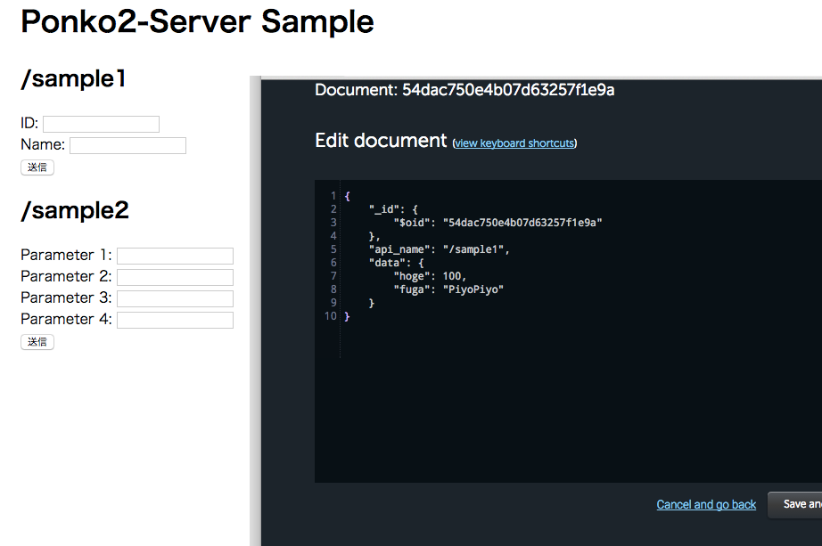

Heroku + MongoLabで
ダミーサーバー
@hironytic
自己紹介

ひろん / 一宮 浩教
- GitHub: hironytic
- Twitter: @hironytic
- おしごとでiOSアプリ作ってます。
- 最近のサーバー事情を知りません。
ことの発端
ある日、突然、やってきたおしごと
- 自社サーバーのWeb API（3つ）を
呼び出して動作する機能 - スケジュール厳しい
→ アプリ側の実装をすぐに開始 - API仕様は決まってるかも？
→ サーバーはまだ立ってない
仕様
- Web API
- REST的なもの
- 結果はJSONで返す
- モバイルアプリ
- 順次Web APIを呼び出す
- Web APIの戻した結果よって
次の呼び出しの挙動が変わる
何か返してくれるサーバーが欲しい
Heroku
- http://www.heroku.com/
- PaaS（クラウドサービスのホスティング）
- Gitでデプロイ
- dynoでスケールアウト
- dyno = 軽量Linuxコンテナ
- dynoを動かした時間（dyno-hour）で課金
- 1アプリごとに1ヶ月につき
750 dyno-hoursが無料でもらえる - 1X dyno 1個を動かすだけなら無料
MongoLab
- https://mongolab.com/
- Mongo DBデータベースのホスティング
- NoSQL
- JSONライクなデータ構造
- MongoLabはWeb UIでデータ操作可能
- Heroku Add-onで連携
- Sandboxプラン（500MBまで）なら無料
ダミーサーバー
- 入力パラメータ
- アプリが送ったものがとにかく見えればそれでいい
- サーバーログ出力で十分
heroku logs -t- 結果データ
- API名（パス）ごとに決め打ちのJSONデータ
- 挙動を変えたいので、決め打ちのデータを手動で変更したい。
- MongoDBならJSONデータ楽勝
- MongoLabならWeb UIでデータ変更可能
作ってみた
- フレームワークにSinatraを利用
- ソース
- ポンコツですが、ご自由にどうぞ
デモ
まとめ
- Heroku + MongoLabでダミーサーバーを立ててみた
- 他にもっといい方法あるんじゃない？
- 情報お待ちしております( ´ ▽ ` )ﾉ